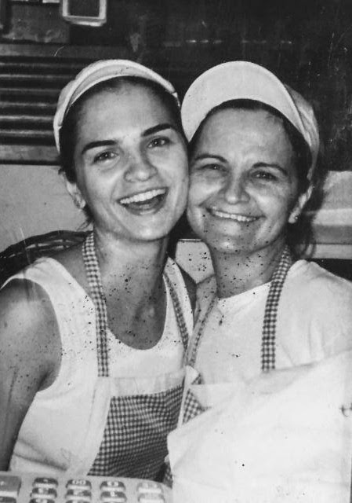
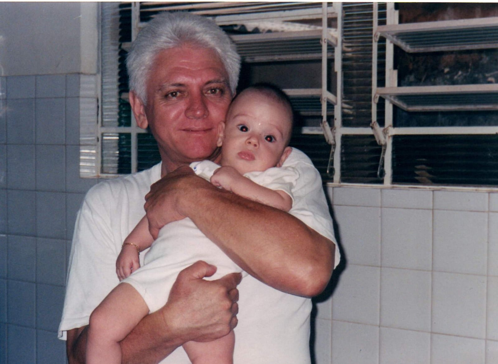
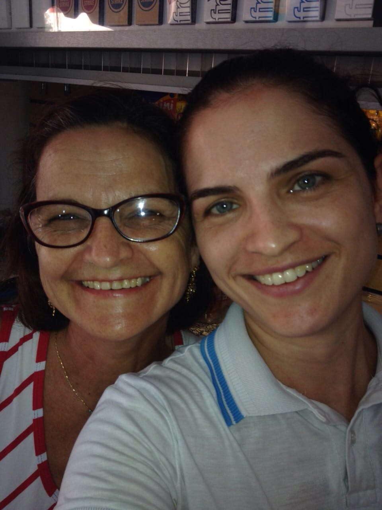
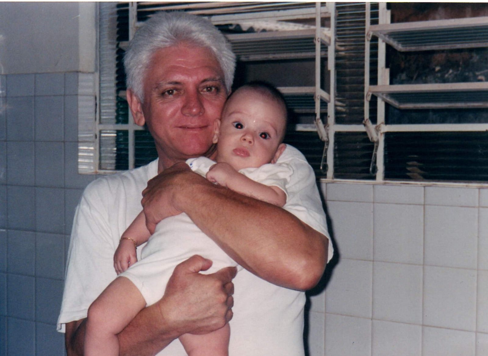
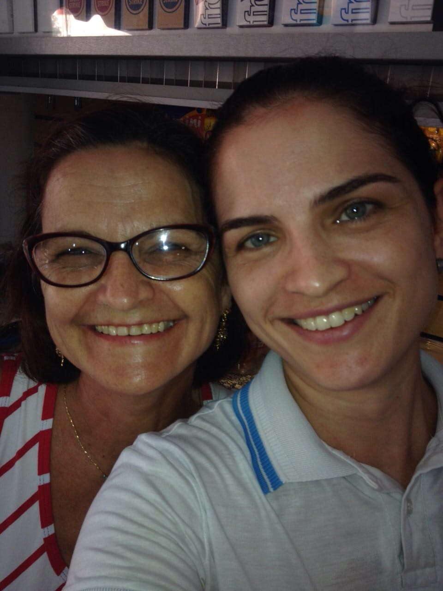
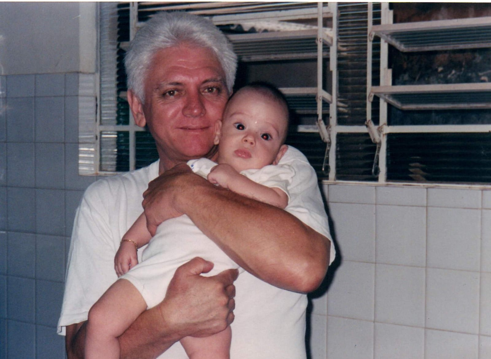

Ah, e um detalhe adicional: quem está escrevendo este texto é
Gabriel Cirilo Erani, o neto de Silvio e Rosangela, e filho de
Monica. Muitos de vocês devem se lembrar do pequeno Gabriel
correndo e brincando pela padaria.
Nossa padaria pode ser pequena, mas o carinho e a gratidão que
temos por cada cliente preenchem todo o espaço. Reconhecemos e
apreciamos cada rosto familiar que nos visita, celebrando as
amizades que construímos ao longo dos anos. Sim, vocês também são
parte desta grande família!
Estamos emocionados em compartilhar nossa história e as deliciosas
criações da Panificadora 37 com você. Nosso maior desejo é
continuar sendo aquele cantinho acolhedor onde você pode sempre
encontrar um pão delicioso e um sorriso amigo.
Esperamos que gostem da nossa padaria tanto quanto nós amamos
fazer parte do seu dia. Sejam sempre bem-vindos à Panificadora 37,
onde cada cliente é tratado como parte da família. Nos vemos em
breve!

Sobre nós
Bem-vindo à nossa querida Panificadora 37, um cantinho especial em
Barretos que celebra mais de 22 anos de tradição e afeto.
Tudo começou com o dedicado padeiro Silvio José Cirilo, cujas mãos habilidosas moldam até hoje a maior parte das delícias que você encontra aqui. Seja o pão francês crocante, a rosca doce que derrete na boca, ou os irresistíveis bolos de laranja, iogurte e fubá, cada receita carrega um pedaço da nossa história.
Silvio, mesmo sendo o único padeiro, enche nossa padaria com o aroma convidativo de pães e doces fresquinhos todos os dias. Sua filha, Monica Aparecida Cirilo, agora gerencia este estabelecimento acolhedor. E não podemos esquecer de Rosangela Conessa, que também desempenhou um papel fundamental nesta bela jornada, apesar de agora estar aposentada. E, claro, Silvio José Cirilo Junior, carinhosamente conhecido como Juninho, irmão de Monica, também foi parte essencial da construção e início da padaria. Juninho, contribuiu grandemente para o sucesso inicial da Panificadora 37. Agora, ele segue seu caminho com seu próprio empreendimento, mas ainda é parte da família Panificadora 37.
Tudo começou com o dedicado padeiro Silvio José Cirilo, cujas mãos habilidosas moldam até hoje a maior parte das delícias que você encontra aqui. Seja o pão francês crocante, a rosca doce que derrete na boca, ou os irresistíveis bolos de laranja, iogurte e fubá, cada receita carrega um pedaço da nossa história.
Silvio, mesmo sendo o único padeiro, enche nossa padaria com o aroma convidativo de pães e doces fresquinhos todos os dias. Sua filha, Monica Aparecida Cirilo, agora gerencia este estabelecimento acolhedor. E não podemos esquecer de Rosangela Conessa, que também desempenhou um papel fundamental nesta bela jornada, apesar de agora estar aposentada. E, claro, Silvio José Cirilo Junior, carinhosamente conhecido como Juninho, irmão de Monica, também foi parte essencial da construção e início da padaria. Juninho, contribuiu grandemente para o sucesso inicial da Panificadora 37. Agora, ele segue seu caminho com seu próprio empreendimento, mas ainda é parte da família Panificadora 37.

.jpg) 



